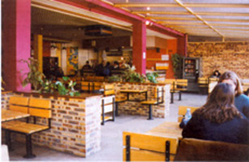
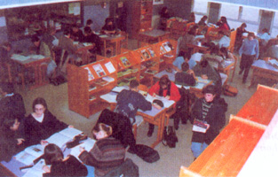
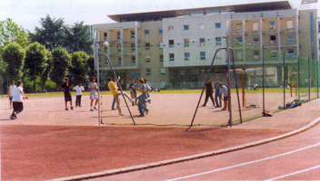

Le lycée :
Pourquoi ce nom là ?
Lycée Pothier... Ca tout le monde connait (ou presque). Mais Pothier ça doit bien être quelqu'un non ? Il doit bien exister quelque part un monsieur Pothier. Et ben oui, vous avez raison, on peut rien vous cacher ! Monsieur Pothier, Robert-Joseph de son prénom, est né à Orléans en 1699. C'est lui là sur la jolie photo :
| Petite biographie rapide, juste histoire d'enrichir votre culture : bon je vous passe l'époque du biberon et des couches et celle des p'tites classes (comme dirait notre cher prof de maths) c'est-à-dire de l'école maternelle au lycée (si ça vous intéresse au point de ne pas pouvoir en dormir, vous pouvez toujours nous écrire on verra ce qu'on peut faire). A 16 ans il commence des études de droit à l'université d'Orléans où il obtient sa licence en 1718, puis il continue en étudiant le droit romain. Connu à Orléans, monsieur Pothier s'oppose à l'usage de la torture, mode d'interrogation encore employé au XVIIIème siècle, car dit-il "la torture interroge et la douleur répond". Ses écrits ont été utilisés pour la rédaction de 1000 des 2231 articles du code civil napoléonien. Il meurt (il faut bien que ça arrive un jour) à Orléans en 1772. Enfin bref, il n'est pas étonnant que son nom soit donné à un lycée. Voilà, en quelques secondes et sans effort vous venez de vous constituez un peu de culture (au moins vous ne serez pas venu pour rien). |
P'tit historique
Maintenant on va pouvoir vous parlez un peu de ce lycée. Déjà il faut savoir que c'est l'un des plus vieux lycées de France (les mauvaises langues diraient que... allez non je ne dis rien). L'établissement est créé en 1609 et a d'abord été un collège de Jésuites jusqu'en 1762. Ensuite l'établissement se développe, devient lycée en 1804 et prend le nom de lycée Pothier en 1924. Les locaux actuels datent de 1962 : auparavant le lycée se situait en plein centre ville, face à la cathédrale. Maintenant il est un peu à l'écart, face à Carrefour (ce qui est bien pratique, demandez aux internes...). Cette même année il s'ouvre aux filles (enfin !). Dans les années 80 le lycée accueille jusqu'à 3000 élèves ! Il diversifie ses enseignements (langues vivantes, disciplines artistiques, informatique). Il devient ensuite l'un des pôles de préparation aux grandes écoles littéraires, scientifiques et commerciales les plus complets et les plus importants en France (14 classes préparatoires en 1985, 22 depuis 1996). Enfin le lycée possède aussi 3 pôles France pour les sportifs de haut niveau : judo, gymnastique rythmique et gymnastique artistique masculine.
Les locaux
Le lycée Pothier compte plus de 2000 élèves : 1200 touristes dans le second cycle (seconde, première et terminale) et 800 étudiants en prépa qui bossent comme des cinglés. Mais bon plutôt que de longs commentaires, rien ne vaut de belles petites photos, non ?
|
 | La cafétéria, et oui il paraît que des gens y vont... Je sais pas trop à quoi elle sert. Si quelqu'un trouve, qu'il nous écrive. |
| Le bon vieux CDI comme tout lycée qui se respecte. Pas la peine d'écrire un roman là-dessus vous savez ce que c'est. |  |
 | Le terrain de sport, qui lui est utilisé régulièrement. On distingue à l'arrière plan le tout moderne internat des filles. On ne parlera pas de l'internat garçon... |
| Là on voit le bâtiment A, c'est celui on trouve tous les bureaux de l'administration. La tâche marron en bas à gauche c'est la cafétéria. Les troisième et quatrième étages de ce bâtiment constituent l'internat garçon. | |
| Je vous présente le bâtiment B ! C'est le bâtiment où l'on trouve toutes les salles des prépas ainsi que les laboratoires où on a fait plein de TP sympas ! | |
| Moment
solennel... Une minute de silence s'il vous plaît... En ces lieux nous avons
souffert des heures et des heures durant. C'est le lieu des fameuses colles. |
Les résultats
Mine de rien ce lycée est l'un des plus grands lycées de province. En 2000, 86% des élèves de terminale S ont eu leur bac. De plus les classes prépas ont de bons résultats, voire très bons, au niveau national. Et pourtant le lycée Pothier est beaucoup moins sélectif que les lycées parisiens, et il n'a pas à rougir de ses résultats, bien au contraire ! Les résultats détaillés de 2001 sont disponibles ci-dessous.
|
Concours et
option
(cliquez pour obtenir le palmarès) |
Nombre d'inscrits |
Nombre d'admissibles |
Nombre d'admis |
Nombre d'intégrés |
|
Ecoles Normales Supérieures |
||||
| 19 | 10 | 7 | 2 | |
| 18 | 7 | 3 | 1 | |
| 11 | 4 | 3 | 2 | |
| 5 | 3 | 3 | 1 | |
| 23 | 2 | 1 | 0 | |
| 23 | 2 | 1 | 0 | |
| 7 | 2 | 1 | 0 | |
| 5 | 2 | 1 | 0 | |
| 2 | 1 | 1 | 0 | |
| 2 | 1 | 1 | 0 | |
| 12 | 0 | 0 | 0 | |
| 9 | 0 | 0 | 0 | |
| 8 | 0 | 0 | 0 | |
| 7 | 0 | 0 | 0 | |
|
Ecoles d'Ingénieurs |
||||
| 76 | 60 | 48 | 15 | |
| 59 | 52 | 46 | 6 | |
| 67 | 50 | 47 | 15 | |
| 54 | 41 | 38 | 16 | |
| 45 | 40 | 33 | 11 | |
| 53 | 33 | 31 | 6 | |
| 26 | 25 | 23 | 4 | |
| 58 | 22 | 21 | 2 | |
| 45 | 16 | 16 | 6 | |
| 42 | 16 | 14 | 2 | |
| 45 | 15 | 14 | 1 | |
| 36 | 12 | 10 | 2 | |
| 37 | 11 | 11 | 1 | |
| 16 | 11 | 8 | 0 | |
| 35 | 11 | 7 | 3 | |
| 38 | 10 | 4 | 2 | |
| 32 | 9 | 8 | 1 | |
| 18 | 8 | 7 | 3 | |
| 19 | 8 | 6 | 0 | |
| 16 | 8 | 4 | 0 | |
| 31 | 7 | 5 | 4 | |
| 14 | 7 | 5 | 1 | |
| 30 | 7 | 3 | 1 | |
| 26 | 7 | 1 | 0 | |
| 13 | 5 | 5 | 0 | |
| 20 | 5 | 4 | 3 | |
| 6 | 5 | 3 | 0 | |
| 13 | 4 | 5 | 0 | |
| 29 | 4 | 2 | 0 | |
| 19 | 2 | 2 | 0 | |
| 13 | 2 | 2 | 0 | |
| 28 | 2 | 1 | 1 | |
| 15 | 2 | 1 | 0 | |
| 11 | 2 | 0 | 0 | |
| 21 | 1 | 1 | 0 | |
| 18 | 1 | 1 | 0 | |
| 4 | 1 | 0 | 0 | |
| 32 | 0 | 0 | 1 | |
| 10 | 0 | 0 | 0 | |
| 9 | 0 | 0 | 0 | |
| 8 | 0 | 0 | 0 | |
| 6 | 0 | 0 | 0 | |
| 5 | 0 | 0 | 0 | |
| 4 | 0 | 0 | 0 | |
| 1 | 0 | 0 | 0 | |
| 1 | 0 | 0 | 0 | |
| 1 | 0 | 0 | 0 | |
| 1 | 0 | 0 | 0 | |
| 1 | 0 | 0 | 0 | |
| 1 | 0 | 0 | 0 | |
| 0 | 0 | 0 | 0 | |
|
Ecoles de Commerce et de Gestion |
||||
| 21 | 17 | 7 | 1 | |
| 21 | 16 | 16 | 2 | |
| 18 | 16 | 14 | 2 | |
| 17 | 16 | 10 | 2 | |
| 25 | 15 | 11 | 2 | |
| 24 | 14 | 11 | 4 | |
| 25 | 13 | 10 | 2 | |
| 17 | 13 | 8 | 0 | |
| 25 | 13 | 6 | 5 | |
| 24 | 12 | 8 | 0 | |
| 12 | 10 | 7 | 0 | |
| 20 | 9 | 6 | 1 | |
| 6 | 6 | 5 | 0 | |
| 6 | 6 | 2 | 0 | |
| 6 | 5 | 5 | 0 | |
| 24 | 5 | 3 | 0 | |
| 5 | 5 | 2 | 0 | |
| 18 | 3 | 3 | 1 | |
| 22 | 3 | 2 | 0 | |
| 2 | 2 | 2 | 0 | |
| 2 | 2 | 2 | 0 | |
| 8 | 2 | 1 | 1 | |
| 5 | 2 | 0 | 0 | |
| 4 | 1 | 1 | 0 | |
| 3 | 1 | 1 | 0 | |
| 1 | 1 | 1 | 0 | |
| 1 | 1 | 1 | 0 | |
| 1 | 1 | 1 | 0 | |
| 1 | 1 | 1 | 0 | |
| 1 | 1 | 1 | 0 | |
| 1 | 1 | 1 | 0 | |
| 7 | 1 | 0 | 0 | |
| 6 | 1 | 0 | 0 | |
| 3 | 1 | 0 | 0 | |
| 4 | 0 | 0 | 0 | |
| 3 | 0 | 0 | 0 | |
| 1 | 0 | 0 | 0 | |
| 1 | 0 | 0 | 0 | |
| 1 | 0 | 0 | 0 | |
| 1 | 0 | 0 | 0 | |
| 1 | 0 | 0 | 0 | |
| 1 | 0 | 0 | 0 | |
| 1 | 0 | 0 | 0 | |
| 1 | 0 | 0 | 0 | |
| 1 | 0 | 0 | 0 | |
| 1 | 0 | 0 | 0 | |
| 1 | 0 | 0 | 0 | |
| 1 | 0 | 0 | 0 | |
| 0 | 0 | 0 | 0 | |
| 0 | 0 | 0 | 0 | |
| 0 | 0 | 0 | 0 | |
| 0 | 0 | 0 | 0 | |
| 0 | 0 | 0 | 0 | |
|
Ecoles d'Agronomie et Vétérinaires |
||||
| 25 | 19 | 17 | 4 | |
| 25 | 16 | 13 | 8 | |
Quelques classements du lycée Pothier aux plus grands concours :
ENS Cachan MP, Pothier se classe 3è au niveau national, juste devant Henri IV, Descartes est 16è.
| archive de hx3208.free.fr/lycee/lycee.htm · copie du 25/11/2026 |